무선설비산업기사 (2006-05-14 기출문제)
1과목: 디지털 전자회로
1. 10진수 25를 2진수로 옳게 나타낸 것은?
- 10001
- 11001
- 10101
- 11000
(정답률: 73%)

2. 다음 카르노(Karnaugh)도의 함수를 최소화 하면?
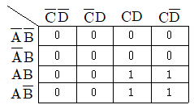
- AB
- AC
- AD
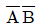
(정답률: 알수없음)
3. 이미터접지 증폭회로에서 컬렉터 전류 IC 는?
- IC=βIB+(1+β)ICO
- IC=βIE+(1+β)ICO
- IC=βIE+(1-β)ICO
- IC=βIB+(1-β)ICO
(정답률: 알수없음)
4. 푸쉬풀 트랜지스터 전력 증폭기에서 바이어스를 완전 B급으로 하지 않는 이유는?
- 효율을 높이기 위해
- 출력을 크게 하기 위해
- 안정된 동작을 위해
- crossover 왜곡을 줄이기 위해
(정답률: 알수없음)
5. 다음은 반 가산기(half adder)회로이다. X, Y에 각각 어떤 게이트 회로가 사용되어야 하는가?
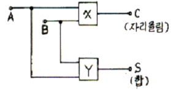
- X : AND, Y : 배타적 OR
- X : 배타적 OR, Y : AND
- X : OR, Y : 배타적 OR
- X : 배타적 OR, Y : OR
(정답률: 알수없음)
6. 반송파의 진폭이 10[V], 변조도가 50[%]인 진폭 피변조파를 검파효율 80[%]의 직선검파 회로의 입력에 가하였을 때 부하저항에 나타나는 신호의 진폭은?
- 2[V]
- 4[V]
- 6[V]
- 8[V]
(정답률: 알수없음)
7. 그림의 회로에서 Rf가 5[%] 증가하고, Ri가 5[%] 감소되었다면 전압증폭율은 대략 몇[%] 변동되는가?
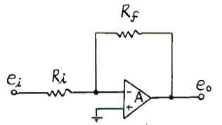
- 30[%]
- 25[%]
- 20[%]
- 10[%]
(정답률: 알수없음)
8. 신호의 표본값에 따라 펄스의 진폭은 일정하고 그 위상만 변화하는 것은?
- PCM
- PPM
- PWM
- PFM
(정답률: 알수없음)
9. 다음에 열거하는 회로 중에서 플립플롭을 이용하여 구성하는 회로가 아닌 것은?
- 시프트 레지스터
- 카운터
- 분주기
- 전가산기
(정답률: 알수없음)
10. 트랜지스터를 증폭작용에 이용할경우의 동작상태는?
- 포화상태
- 활성상태
- 차단상태
- 역할성상태
(정답률: 40%)
11. 다음과 같은 논리회로의 출력은?
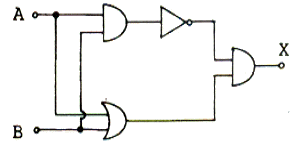
- X=A+B
- X=AㆍB
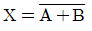
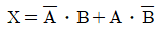
(정답률: 알수없음)
12. 그림과 같은 다이오드 클리핑회로에 정현파를 인가했을 때 출력전압 파형은?
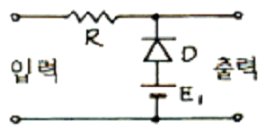
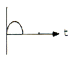
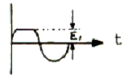
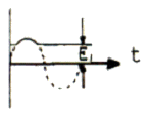
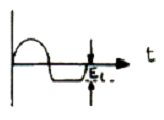
(정답률: 알수없음)
13. 저항 및 인덕턴스 L의 직렬 회로가 있다. 이 회로의 시정수는?
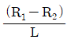
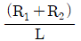
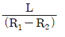
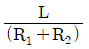
(정답률: 70%)
14. 10진수 8을 3초과코드(exvess-3 code)로 변환하면?
- 1000
- 1001
- 1011
- 1111
(정답률: 알수없음)
15. 정논리회로에서 다음 트랜지스터 회로의 기능은?
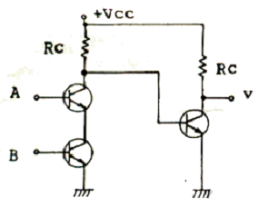
- OR회로
- AND회로
- NAND회로
- EOR회로
(정답률: 60%)
16. 다음 중 통신용 송신기의 주발진기 및 수신기의 국부발진기 등에 가장 많이 응용되는 발진회로는?
- 자려 발진회로
- CR 발진회로
- LC 발진회로
- 수정 발진회로
(정답률: 알수없음)
17. 다음의 연산회로는 어느 회로인가?
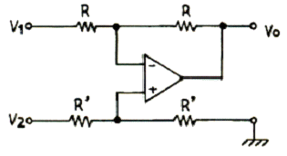
- 부호변환회로
- 미분회로
- 적분회로
- 감산회로
(정답률: 알수없음)
18. 다음 회로의 제너 다이오드에 흐르는 전류 IZ[㎃]는? (단, 제너 다이오드의 제너전압은 10[V]이다)
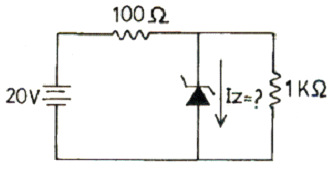
- 60
- 70
- 80
- 90
(정답률: 알수없음)
19. 다음 중 시미트 트리거 회로와 가장 관련없는것은?
- 전압비교회로
- 구형파회로
- 쌍안정회로
- 증폭회로
(정답률: 알수없음)
20. LC 동조 발진기에 비해 수정 발진기의 특징으로 잘못 설명한 것은?
- 안정도가 높다.
- Q가 크다.
- 발진 주파수를 가변 하기가 곤란하다.
- 저주파 발진기로 적합하다.
(정답률: 알수없음)
2과목: 무선통신 기기
21. 다음은 위성통신에 관한 설명이다. 틀린것은?
- 주로 SHF 대를 이용하고 위성에 의한 원거리 통신을 한다.
- 위성통신시스템에서는 다중화기술이 불가능하다.
- 마이크로웨이브 통신방식과 같이 가시거리 통신이다.
- 정지궤도에 떠있는 통신위성은 중계소 역할을 한다.
(정답률: 알수없음)
22. 어느 정류회로의 출력전압을 측정하였더니 무부하시 441[V]이고 정격 부하연결시 420[V]였다. 이 정류회로의 전압 변동률은 얼마인가?
- 5[%]
- 5.7[%]
- 0.9[%]
- 1.1[%]
(정답률: 알수없음)
23. 아래 그림은 FM의 복조에 사용되는 회로의 블록도이다. 이 회로를 무엇이라 하는가?
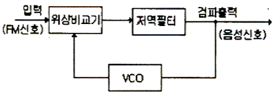
- PLL회로
- BFO회로
- 스켈치회로
- 디엠파시스회로
(정답률: 64%)
24. FM수신기에 있는 스켈치(Squelch)회로의 사용목적은?
- 도래하는 전파를 증폭한다.
- 도래하는 전파의 잡음을 제거한다.
- 도래하는 전파의 주파수변동을 자동으로 조정하여 신호대 잡음비를 개선한다.
- 잡음 전력이 수준 이상으로 커졌을 때 가청주파 증폭단을 차단시킨다.
(정답률: 34%)
25. 수신기 시험에 의사 공중선을 사용하는 이유는?
- 수신기의 입력 레벨을 감쇠시키기 위해
- 표준 입력 신호를 공급하기 위해
- 공중선에의한 입력회로와 등가회로를 구성하기 위해
- 수신기의 감도가 좋아지기 때문에
(정답률: 알수없음)
26. 위성중계기에서 대전력증폭기로 사용되는 것은?
- TWTA
- MAGNETRON
- IMPATT DIODE
- GaAs MESFET
(정답률: 알수없음)
27. 어떤 정류기의 부하의 양단 평균 전압이 2000[V]이고 맥동율은 2[%]라고 한다. 교류분은 얼마인가?
- 30[V]
- 40[V]
- 50[V]
- 60[V]
(정답률: 59%)
28. 검파기의 교류부하가 직류부하보다 작은 경우에 포락선의 부(-)의 첨두부분이 절단되는 파형왜곡은?
- Negative Peak Clipping
- Diagonal Clipping
- 포락선 왜곡
- 하강 경사 왜곡
(정답률: 알수없음)
29. 지상으로부터 약 36,000㎞에 위치하여 지구의 자전 주기와 위성의 공전 주기를 같게 하여 적도상에 같은 간격으로 3개 정도를 배치하여 전 세계를 커버할 수 있어 경제적인 위성 통신을 할 수 있는 방식은?
- 랜덤 위성 방식
- 정지 위성 방식
- 위상 위성 방식
- 다중 위성 방식
(정답률: 알수없음)
30. AM에서 과변조가 발생하였을 때 일어나는 현상과 관계가 없는 것은?
- 피변조파에 많은 고조파가 발생한다.
- 점유대역폭이 넓어지므로 다른 통신에 혼신을 준다.
- 명료도가 개선되어 자기진동이 일어난다.
- 송신기에 과부하가 걸린다.
(정답률: 알수없음)
31. AM 수신기의 종합특성과 관련이 없는 것은?
- 감도
- 선택도
- 충실도
- 변조도
(정답률: 알수없음)
32. 주파수 변조에서 IDC회로를 사용하는 이유는?
- 반송파 주파수를 일정하게 유지하기 위해서
- 최대 주파수 편이가 규정치를 넘지않게 하기위해서
- 주파수 체배를 정확하게 하기 위해서
- 주파수 변조 특성을 좋게 하기 위해서
(정답률: 알수없음)
33. 마이크로파 다중 중계방식과 관계 없는 것은?
- 복동조 중계방식
- 헤테로다인 중계방식
- 무급전 중계방식
- 검파 중계방식
(정답률: 알수없음)
34. FM수신기에서 Limiter 회로역할로 가장 타당한것은?
- 주파수의 변화에 따른 출력 전압의 변화를 검출
- 잡음지수를 증가시키는 역할
- 수신신호의 진폭을 일정하게 만드는 역할
- 송신측에서 강조되어 보내진 높은 주파수 신호를 수신단에서 억제하는 역할
(정답률: 알수없음)
35. 진폭 변조 회로의 출력을 Oscilloscope로 측정하였더니 다음 그림과 같았다. a = 2b 이면 변조율은?
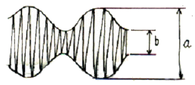
- 80[%]
- 50[%]
- 33.3[%]
- 25[%]
(정답률: 17%)
36. 진폭변조송신기의 출력이 100% 변조시에 평균 150[W]이다. 30% 변조시의 출력은 몇 [W]인가?
- 114.5
- 104.5
- 94.5
- 84.5
(정답률: 알수없음)
37. 다음은 SSB 통신방식을 DSB 방식과 비교 설명한 것이다. 이중 틀리는 것은?
- SSB 방식은 DSB 방식에 비해서 점유주파수 대역폭이 1/2 이하이다.
- 동일전력인 경우 SSB는 DSB보다 전체적으로 S/N가 대략 10~12㏈ 개선된다.
- 대전력 송신기의 경우 SSB는 회로가 복잡 하므로 DSB보다 소비전력이 훨씬 많이 든다.
- SSB 방식은 DSB 방식에 비해서 선택성 페이딩의 영향이 적다.
(정답률: 알수없음)
38. AM무선전화 송신기의 왜율 측정시 필요 없는것은?
- 발진기
- 저역필터
- 감쇠기
- 이상기
(정답률: 50%)
39. 다음 중 FM 검파기의 종류에 해당되지 않는것은?
- Cascode 형
- Foster-Seeley 형
- 비검파기형
- 복동조형
(정답률: 알수없음)
40. 송ㆍ수신기용 발진기로서 적당하지 않은 조건은?
- 주파수 안정도가 낮을 것
- 발진출력 변화가 적을 것
- 고조파 발생이 적을 것
- 부하 변동에 의한 영향이 적을 것
(정답률: 알수없음)
3과목: 안테나 개론
41. 다음 중 진행파 안테나에 해당되지 않는 것은?
- 어골형 안테나
- 비버리지 안테나
- 반파장다이폴 안테나
- 진행파 V형 안테나
(정답률: 58%)
42. 파라보라 안테나(parabola antenna)에서 파라보라의 개구직경이 클수록 어떻게 되는가?
- 지향성이 예민해지고 이득은 적어진다.
- 지향성은 변함없으나 이득은 커진다.
- 지향성이 예민해지고 이득도 커진다.
- 지향성은 예민해지나 이득은 변함없다.
(정답률: 알수없음)
43. 다음은 정관형(top loading) 안테나에 대한 설명이다. 틀린 것은?
- 정관은 대지와의 정전용량을 증가 시킨다.
- 고각도 복사를 억제 시킨다.
- 중파방송에서 많이 사용된다.
- 정관은 실효길이를 감소시키는 역할을 한다.
(정답률: 28%)
44. 동축급전선의 정전용량 성분이 50[㎊/m], 인덕턴스 성분이 0.5[H/m]일때 VHF주파수대의 특성 임피던스는?
- 100[Ω]
- 75[Ω]
- 50[Ω]
- 37.5[Ω]
(정답률: 알수없음)
45. 안테나의 고유주파수를 높게 하려면 다음 중 어느 방법을 사용하면 되는가?
- 안테나와 직렬로 코일을 접속한다.
- 안테나와 병렬로 콘덴서, 직렬로 코일을 접속한다.
- 안테나와 직렬로 콘덴서를 접속한다.
- 안테나와 병렬로 저항을 접속한다.
(정답률: 알수없음)
46. 다음 중 인공잡음의 원인에 속하지 않는 것은?
- 글로우 방전
- 코로나 방전
- 불꽃 방전
- 공전 방전
(정답률: 알수없음)
47. 반파장 다이폴 안테나의 실효면적은 약 얼마인가?
- 0.11λ2[m2]
- 0.12λ2[m2]
- 0.13λ2[m2]
- 0.14λ2[m2]
(정답률: 알수없음)
48. 전리층의 제 1종 감쇠에 대하여 잘못 설명한것은?
- 전리층을 투과할 때 받는 감쇠이다.
- 제 1종 감쇠와 관계 없는 층은 F2층이다.
- 주파수 제곱에 반비례한다.
- 굴절률 n 에 비례한다.
(정답률: 알수없음)
49. 비유전율 εs=3, 비투자율 μs=3인 유리에서 전파의 전파속도는 자유공간 전파속도의 몇 배인가?
- 1/3배
- 1배
- 3배
- 9배
(정답률: 알수없음)
50. 다음 중 롬빅 안테나에 종단저항을 두는 목적은?
- 반사파를 얻기 위한 것이다.
- 정재파를 얻기 위한 것이다.
- 진행파를 얻기 위한 것이다.
- 정현파를 얻기 위한 것이다.
(정답률: 알수없음)
51. 지표파의 설명 중 틀린 것은?
- 주파수가 높을수록 감쇠가 심하다.
- 지표파의 통달거리는 주파수 외에도 대지 도전율, 유전율에 대해서도 영향을 받는다.
- 감쇠는 해상에서 적고 건조지는 크다.
- 수직편파 보다는 수평편파 쪽이 감쇠가 적다.
(정답률: 알수없음)
52. 특성 임피던스가 50[Ω]인 급전선에 140[Ω]의 부하를 접속하였다. 정합시키기 위하여 λ/4 길이의 Q 변성기를 삽입하고자 한다면 Q 변성기의 임피던스를 얼마로 하여야 하는가?
- 52.46[Ω]
- 83.67[Ω]
- 90.43[Ω]
- 140[Ω]
(정답률: 알수없음)
53. 무지향성 안테나의 지향계수(Directivity)는 얼마인가?
- 0
- 1
- 1.5
- 1.64
(정답률: 알수없음)
54. 초단파 통신에서 주로 사용되는 전파는?
- 직접파와 대지반사파
- 대류권반사파와 지표파
- 대지반사파와 전리층 투과파
- 전리층 반사파와 지표파
(정답률: 알수없음)
55. 수직 접지 안테나의 설명으로 옳지 않은 것은?
- 수직편파를 복사한다.
- 높이는 반드시 λ/4이어야 한다.
- 수평면내에서는 무지향성이다.
- 안테나의 길이가 긴 경우에는 직렬로 콘덴서를 삽입해서 공진시킨다.
(정답률: 50%)
56. 다음 중 안테나와 송신기와의 거리가 멀리 떨어져 있을 때 사용하는 급전선으로 가장 타당한 것은?
- 평행 2선식
- 평행 4선식
- 동축 케이블식
- 동조형 급전선식
(정답률: 알수없음)
57. 그림과 같은 반파장 안테나에서 급전선의 최소길이 l은 얼마인가?(단, 파장은 10[m]이고 동조급전방식이다.)
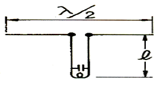
- 2.5[m]
- 5[m]
- 7.5[m]
- 10[m]
(정답률: 알수없음)
58. 길이 20[m]의 λ/4수직접지안테나에서 고유파장과 고유주파수는?
- λ : 40[m] , f : 5.5[㎒]
- λ : 80[m] , f : 3.75[㎒]
- λ : 40[m] , f : 7.5[㎒]
- λ : 80[m] , f : 1.25[㎒]
(정답률: 알수없음)
59. 송신 안테나 높이가 35[m]이고 수신 안테나의 높이가 25[m]일 때 기하학적 가시거리는 약 얼마인가?
- 29.27[㎞]
- 39.27[㎞]
- 49.27[㎞]
- 59.27[㎞]
(정답률: 알수없음)
60. 다음 중 판상 안테나가 아닌 것은?
- 박쥐 날개형 안테나
- 슬롯 안테나
- 코너 리플렉터 안테나
- 턴 스타일 안테나
(정답률: 알수없음)
4과목: 전자계산기 일반 및 무선설비기준
61. 자기보수(Self-complementary)기능을 갖는 코드는?
- 3초과 코드
- 해밍 코드
- 그레이 코드
- ASCII 코드
(정답률: 알수없음)
62. 오퍼랜드 부분에 연산에 필요한 숫자 데이터를 직접 넣어주는 주소지정방식으로 명령어 자신이 데이터를 직접 포함하고 있어 명령어의 실행이 바로 이루어지며, 데이터를 구하기 위해 메모리를 엑세스할 필요가 없다. 그러나 사용할 수 있는 수의 크기가 오퍼랜드 필드의 크기로 제한되는 이 방식은 무엇인가?
- 직접주소 지정방식(Direct Addressling Mode)
- 함축주소 지정방식(Implied Addressing Mode)
- 레지스터주소 지정방식(Register Addressing Mode)
- 즉시주소 지정방식(Immediate Addressing Mode)
(정답률: 40%)
63. 중앙처리장치의 동작속도에 가장 큰 영향을 미치는것은?
- 주소버스의 종류
- 명령의 구성형식 및 종류
- 레지스터의 비트 구성방법
- 중앙처리장치의 클럭주파수
(정답률: 알수없음)
64. 좋은 프로그램의 기준과 관계 없는 것은?
- 문제를 의도한 대로 해결하는 것
- 신뢰성이 높은 것
- 가능한 기계어로 작성한 것
- 해독과 관리가 쉬운 것
(정답률: 알수없음)
65. 중앙처리장치로부터 발생되는 기억장치의 읽기 신호와 쓰기 신호를 이용하여 입출력장치에 대한 읽기와 쓰기를 수행할 수 있는 방식은?
- Interrupt I/O
- Channel I/O
- Programmed I/O
- Memory Mapped I/O
(정답률: 알수없음)
66. 컴퓨터 시스템 내부에서 순간 순간의 상태를 기억하고 있는 것을 무엇이라 하는가?
- Interrupt
- PSW
- CCW
- SVC
(정답률: 40%)
67. 그림에서 출력 X 를 입력 A, B 의 함수로 바르게 표시한 것은?
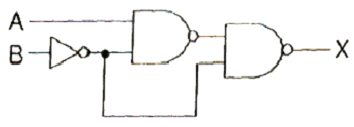
- X = AB
- X = A + B
- X = A'B + AB'
- X = AB + A'B'
(정답률: 37%)
68. 다음 중 OS의 종류가 아닌 것은?
- Linux
- UNIX
- Windows XP
- JCL
(정답률: 알수없음)
69. 10 진수 12 의 gray code 는 어느 것인가?
- 1111
- 1010
- 1101
- 1000
(정답률: 70%)
70. 다음 중 컴퓨터의 특징이 아닌 것은?
- 처리가 신속 정확하다.
- 자동처리 능력이 없다.
- 다량의 기억능력이 있다.
- 논리판단 및 비교기능이 있다.
(정답률: 알수없음)
71. 디지털텔레비전 방송국의 송신설비에 대한 공중선 전력허용편차 상한퍼센트와 하한퍼센트는 각각 얼마인가?
- 5% , 5%
- 5% , 10%
- 10%, 20%
- 20% , 50%
(정답률: 알수없음)
72. 무선국에서 사용하는 주파수마다의 중심주파수는?
- 기준주파수
- 지정주파수
- 특정주파수
- 필요주파수대폭
(정답률: 40%)
73. 무선설비의 안전시설 규정상 고압전기를 발생하는 발전기 등은 절연차폐체나 접지된 금속 차폐체 내에 수용되어야 한다. 다음 중 고압전기의 설명으로 맞는것은?
- 600V를 초과하는 고주파 및 교류 전압 또는 750V를 초과하는 직류전압
- 220V를 초과하는 고주파 및 교류 전압 또는 250V를 초과하는 직류전압
- 380V를 초과하는 고주파 및 교류 전압 또는 450V를 초과하는 직류전압
- 80V를 초과하는 고주파 및 교류 전압 또는 100V를 초과하는 직류전압
(정답률: 알수없음)
74. 다음 중 정보통신부장관이 행하는 전파감시업무에 해당하지 아니한 것은?
- 혼신을 일으키는 전파의 탐지
- 무자격통신사에 의한 통신 탐지
- 무허가 무선국에서 발사하는 전파탐지
- 무선국의 호출방법, 청취의무이행 준수에 관한 탐지
(정답률: 알수없음)
75. 육상이동국과의 통신 또는 이동중계국의 중계에 의한 통신을 하기 위하여 육상에 개설하고 이동하지 아니하는 무선국은?
- 육상국
- 고정국
- 해안국
- 기지국
(정답률: 알수없음)
76. 다음 중 공중선계의 조건으로서 충족하여야 할 내용으로 적합하지 않는 것은?
- 공중선은 이득이 높을 것
- 지향성은 복사되는 전력이 목표하는 방향을 벗어나지 아니하도록 안정적일 것
- 정합은 신호의 반사손실이 최고화 되도록 할 것
- 만족스러운 감도를 얻을 수 있을 것
(정답률: 알수없음)
77. 정보통신기기 인증을 받은후“정보통신기기에 인증표시를 허위로한때(1차 위반시)”에 해당하는 행정처분기준은?
- 인증취소
- 시정명령
- 파기명령
- 수거명령
(정답률: 알수없음)
78. 송신설비의 공중선ㆍ급전선 등 고압전기를 통하는 것은 원칙적으로 그 높이가 사람이 보행하거나 기거하는 평면으로부터 몇 [m] 이상이어야 하는가?
- 1.5
- 2.0
- 2.5
- 3.0
(정답률: 알수없음)
79. 다음 중 인증이 연제되는 정보통신기기가 아닌것은?
- 시험ㆍ연구를 위하여 제조하거나 수입하는 인증대상 정보통신기기
- 국내에서 판매하지 아니하고 수출전용으로 제조하는 인증대상 정보통신기기
- 여행자가 판매를 목적으로 반입하는 인증대상 정보통신기기
- 외국으로부터 도입하는 선박에 설치된 인증대상 정보통신기기
(정답률: 37%)
80. 100㎒ ~ 470㎒의 주파수를 사용하는 지구국의 주파수허용편차는? (단위 : 백만분율)
- 5
- 10
- 20
- 50
(정답률: 28%)